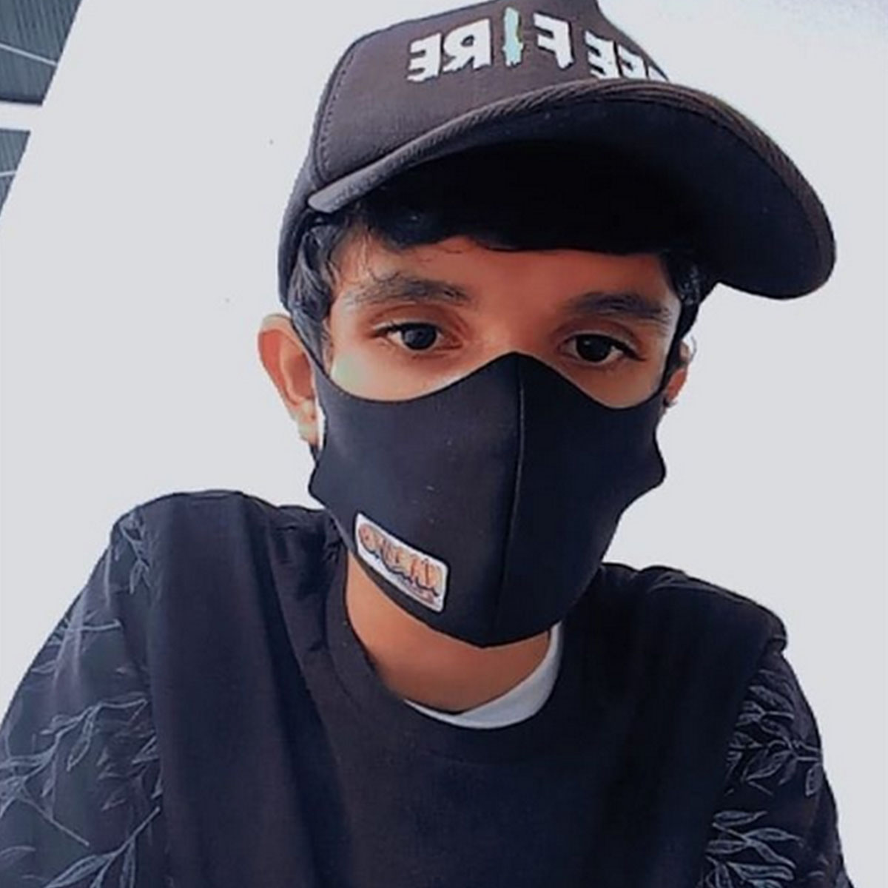

Quem sou eu?
Deivid Dias de Oliveira
Informações pessoais
Data de nascimento: 04/02/2005
Nacionalidade: Brasileiro
Endereço: Sítio Cana Brava dos Ferreiras, Granjeiro - CE
Um pouco sobre mim
Olá, meu nome é Deivid Dias de Oliveira, tenho 16 anos, sou estudante da E.E.E.P Dr. José Iran Costa, cursando o segundo ano de Informática (TI) na mesma. Após ter entrado nessa escola, comecei a ter contado com conceitos e algumas linguagens de programação, e nisso vi que era uma área muito bela. Atualmente estou focado na carreira Front-End, que é a que desejo seguir. Sei bastante de HTML, CSS e um básico/intermediário de JavaScript (linguagem de programação que quero me tornar Full).

Apesar de ser um pouco estressado e as vezes xingar meus projetos, sou uma pessoa bastante sociável e fácil de se trabalhar. Não possuo muita aptidão para liderar, principalmente quando as pessoas envolvidas são, digamos assim, insuportáveis.
Como não há um curso específico para pessoas que desejam seguir na carreira de Front-End, pretendo cursar Ciências da Computação e/ou Engenharia de Software.
Meu sonho desde sempre foi sair do Brasil e ir para um país onde eu pudesse viver bem e comprar as coisas que quero, então penso em procurar vagas de emprego para F.E em algum país Europeu, como Portugal, que parece uma boa opção.